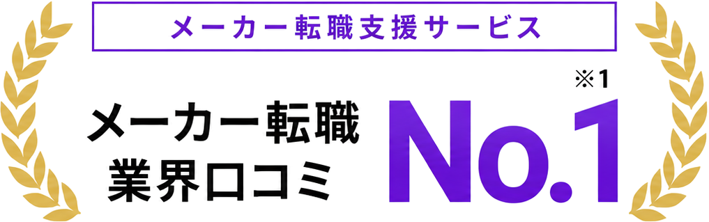
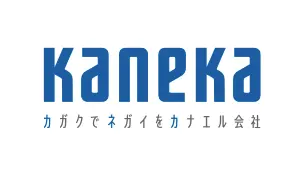
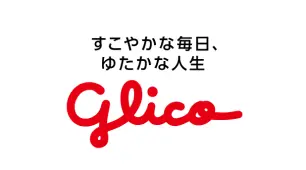
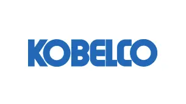
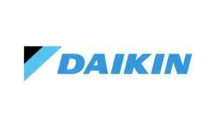
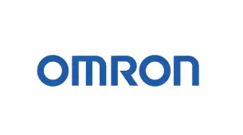
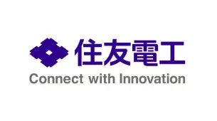
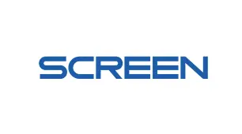
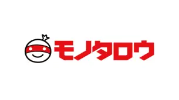
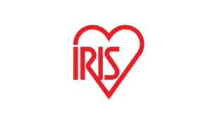

設備導入や工程改善の経験。他社なら、どう評価されるのだろう。自分の強みが活きる企業や、年収の可能性を知りたい。
31歳・生産技術生産技術職に特化した転職エージェント

※Googleビジネスプロフィールの口コミ評価4.9・600件以上（2026年7月時点）。 ※生産技術求人数は、生産技術職の求人保有数についてメーカー特化型の転職エージェント6社を比較（2026年10月時点）。
※年収アップ率は転職成功者を対象とした当社集計。転職成功率は内定率を示します。※1 Googleビジネスプロフィールの口コミ評価4.9・600件以上（2026年7月時点）
※2 生産技術職の求人保有数。メーカー特化型の転職エージェント6社を比較
（2026年10月時点）
経験の市場価値を可視化
設備・工程・改善の経験を適正に評価し、年収アップにつながるキャリアをご提案します。
求人票にない企業の実態
休日・転勤・配属・投資計画など、現場のリアルな情報を企業に直接確認します。
希望とキャリアの両立
スマートファクトリー・自動化など今後の成長領域も踏まえ、長期的なキャリアプランをご提案します。









01 / Your concerns
こんなお悩み、ありませんか？
経験の評価も、仕事内容も、働く条件も。
これからの職場選びで、気になっていることはありませんか。

今の経験を活かして、もっと仕事の幅を広げたい。自動化や工場DXなど、次に挑戦できる領域を知りたい。
34歳・生産技術
休日や突発対応に、予定が左右されない働き方がしたい。技術に向き合う時間も、自分の時間も大切にしたい。
28歳・生産技術勤務地や転勤の不安なく、長く働ける会社を選びたい。家族との暮らしも、これからのキャリアも大切にしたい。
33歳・生産技術ギブクリエーションなら、
その経験を、もっと広い選択肢へ。
メーカー領域に特化した専門性と、ネットにないリアルな情報で、あなたの経験が正当に評価されるキャリア選択をサポートします。
02 / Why GIVE CREATION
生産技術の転職で、
生産技術の転職で、
ギブクリエーションが
選ばれる理由。
技術への理解、企業への理解、あなたへの理解。
3つの視点で、納得できる転職を支援します。
経験を、市場で評価される強みに。
担当した業務だけでなく、どんな課題に向き合い、何を考え、どう改善したのかまで伺います。生産技術を理解する担当者が、経験に埋もれた強みを見つけ、企業ごとの評価ポイントに合わせて伝えます。
職務経歴書の伝わり方（例）
一般的な書き方（伝わりにくい例）
組立ラインの設備保全・改善を7年間担当。設備トラブル対応や工程改善に従事。
ギブクリエーションによる言語化（伝わる例）
PLCを活用した搬送設備の改修から量産立ち上げまで担当。段取り替えの見直しや工程自動化により、設備稼働率を92%→97%へ改善。FA・設備制御・生産技術領域において応用可能な専門性として評価。
求人票にない働き方の実態を、
企業に直接確認。
求人票だけでは分からない、働き方や配属先の実態を企業に直接確認。
入社後のギャップを防ぎ、あなたの希望に合う環境かどうかを見極めてからご案内します。
企業に確認する主な項目（例）
休日・残業の実態
年間の休日日数や突発対応の頻度など、現場のリアルを確認。
- 年間休日日数
- 月の呼出し回数
- 休日出勤の有無
勤務地・転勤の条件
初期配属・将来的な転勤可能性まで、企業に直接確認。
- 初期配属先
- 転勤の有無・頻度
- 国内・海外の可能性
業務範囲・裁量
担当工程や設備投資、改善テーマの規模など、任される役割を確認。
- 担当工程・設備
- 設備導入・工法開発
- チーム規模・裁量
評価・キャリアパス
昇格基準や評価制度、専門性を活かしたキャリアの可能性を確認。
- 評価制度・昇格基準
- 専門性の評価ポイント
- 将来的なキャリアパス
これらの情報を企業の採用担当・現場責任者に直接確認したうえで、
あなたの希望に合う企業だけをご提案します。
譲れない条件を先に決めて、
合う求人だけをご提案。
年収、勤務地、休日、仕事内容、企業文化など、あなたが譲れない条件を明確にしたうえで、条件に合う企業だけを厳選してご提案します。転職後のミスマッチを防ぎ、納得できる選択をサポートします。
希望条件の整理例
年収
現年収以上 /
目安：700万円以上
勤務地
関西圏 / 転勤なし
（または限定可）
休日・働き方
土日祝休み /
休日出勤の頻度
仕事内容
設備導入・工程改善
など上流に携わりたい
企業文化
安定した経営基盤 /
チームでの改善文化
よくある条件のトレードオフ例
条件だけで探すと…
- 求人が限られ、選択肢が少ない
- 年収や仕事内容に妥協が必要
- 入社後に「思っていた環境と違った」
ギブクリエーションなら…
- 条件と市場価値のバランスを踏まえた求人提案
- 非公開求人を含む幅広い選択肢
- 入社後の働き方まで見据えたマッチング
転職を決める前でも大丈夫です。
まずは、あなたの経験の
可能性を確認しませんか？
- 今すぐの転職でなくても
ご相談可能 - これまでのご経験を
もとに可能性を整理 - ご相談は無料・
完全非公開
03 / Awards & Recognition
メーカー企業から、支援品質を評価されています。
マッチング精度や選考成果を評価され、
メーカー各社のエージェントアワードを受賞しています。
- 受賞実績10社+
- 大手メーカー
取引実績250社+ - 支援した
生産技術エンジニア1,000名+

HITACHI AGENT AWARD 2025
TOP10 AGENT 選出
求人要件とキャリア志向を結びつける、精度の高い提案力が評価されました。
3年連続受賞
IHI AGENT AWARD 2025
優秀パートナー賞
経歴や志向を踏まえたマッチング精度と、選考成果が評価されました。
2年連続受賞
OMRON / 2024年度
優秀パートナー賞
キャリア採用への貢献と、応募者の高い選考通過率が評価されました。
2年連続受賞

ASTEMO AGENT AWARD 2026
ニューフェイス賞
技術領域への深い理解と、短期間での採用決定実績が評価されました。
契約翌月から
採用決定
KUBOTA AGENT AWARD 2023
Best Growth賞
採用決定数の飛躍的な伸びと、コンサルティング品質が評価されました。
決定数の伸び1位
※各社が主催するキャリア採用領域のエージェントアワードにおける受賞実績です。
04 / Job examples
生産技術の経験が活きる、
生産技術の経験が活きる、
求人の一例
これまで培ってきた設備・工程・改善の経験を活かせる求人を、業界・職種・条件別にご紹介します。
ここに掲載しているのは一例で、一般には公開されていない非公開求人も取り扱っています。
- 大手・優良メーカーの求人が豊富大手メーカーを中心に、非公開求人も取り扱っています。
- 生産技術に特化した求人のみ設備・工程・自動化・DXなど、専門性を活かせる求人をご紹介します。
- 企業の実態まで確認してご提案働き方・配属・キャリアパスまで把握し、ミスマッチのない転職を支援します。
※公開求人の内容は一例です。募集状況やご経験によりご紹介可能な求人は異なります。
05 / Success stories
変わったのは、
変わったのは、
年収だけじゃない。
年収・働き方・仕事内容・キャリアの方向性など、
生産技術エンジニアの転職で実現できた変化の一例をご紹介します。
- 年収アップ経験の市場価値を
正しく評価 - 働き方の改善休日・残業・転勤の
実態を確認 - 仕事内容の充実やりたい領域への
キャリアチェンジ - 将来の可能性専門性を活かした
キャリアパス

31歳・生産技術（自動車部品）完成車メーカー
Before既存ライン
工程改善
›
工程改善
After次世代ライン
設備企画
設備企画
年収480万円→560万円
働き方フレックス
転職者の声★★★★★「設備導入と改善の実績を具体化したことで、より上流の設備企画へ進めました。」
ギブクリエーションの支援
設備導入と改善の実績を具体化し、より上流の設備企画の求人をご提案しました。
29歳・生産技術（電子部品）半導体製造装置メーカー
Before設備保全・
トラブル対応
›
トラブル対応
After装置立上げ・
プロセス開発
プロセス開発
年収450万円→540万円
休日出勤多い→大幅に減少
転職者の声★★★★★「呼び出しや休日工事が多い毎日でしたが、今は計画的に立上げを進められています。」
ギブクリエーションの支援
働き方の実態を確認し、計画的に立上げを進められる装置立上げの求人をご提案しました。

34歳・生産技術（素材メーカー）勤務地限定の大手企業
Before全国転勤
あり
›
あり
After勤務地限定
転勤なし
転勤なし
年収620万円→680万円
勤務地転勤あり→転勤なし
転職者の声★★★★★「転勤の不安から、家族を理由に諦めていた転職でした。勤務地を軸に探してもらえたのが決め手です。」
ギブクリエーションの支援
勤務地を軸に探し、勤務地限定の大手企業の求人をご提案しました。

27歳・生産技術（食品機械）工場DX部門
Before設備保全中心
の改善業務
›
の改善業務
After工場DX・
データ活用
データ活用
年収410万円→480万円
働き方在宅週1〜2回
転職者の声★★★★★「現場の知識を、データ分析や自動化に活かせる環境を提案してもらいました。」
ギブクリエーションの支援
現場の知識を活かせる、データ分析や自動化の環境をご提案しました。

36歳・生産技術（重工）技術専門職コース
Before管理職コース
のみ
›
のみ
After専門職として
技術を極める
技術を極める
年収720万円→800万円
役割管理職のみ→専門職
転職者の声★★★★★「管理職以外の道があると知らなかった。専門性を評価してもらえる会社に出会えました。」
ギブクリエーションの支援
専門性を評価する、技術専門職コースのある会社をご提案しました。

32歳・生産技術（電機）ロボットメーカー
Before自社設備
の導入・改善
›
の導入・改善
Afterロボット導入
プロジェクト
プロジェクト
年収530万円→620万円
領域自社設備→先端技術へ
転職者の声★★★★★「自社設備の経験が、ロボットやAIの現場導入という新しい領域で評価されました。」
ギブクリエーションの支援
自社設備の経験を評価できる、ロボット・AIの現場導入の求人をご提案しました。
同じ生産技術でも、進みたい道は人それぞれ。
あなたの場合の選択肢を個別にご案内します。
06 / How to use
転職を決める前から、
転職を決める前から、
一緒に考えられます。
転職時期が未定でも、相談できます。
転職するかどうかも含めて、お話を伺います。
01すぐに動きたい方
3ヶ月以内に転職したい
条件整理から書類・面接対策、
年収交渉まで最短ルートで伴走します。
- 初回面談で希望条件を整理年収・勤務地・業務内容の優先順位を明確化
- 書類の添削・面接対策企業ごとの選考傾向に合わせて対策
- 年収・条件交渉までサポート納得のいく条件での転職を実現
02迷っている方
転職すべきか迷っている
今の会社に残る選択肢も含めて、
キャリアの棚卸しからお手伝いします。
- 経験の棚卸しと市場価値の確認他社で評価されるスキルを可視化
- 残る判断も含めた選択肢の提示転職・現職継続の両面からご提案
- 決断はご自身のタイミングでご自身のペースでご相談いただけます
03まだ先の方
まずは情報収集だけしたい
いま動いた方が良いのか、
相場観や選択肢を知っておくことで、
将来の安心につながります。
- 生産技術の求人動向・市場相場の共有業界・職種ごとの最新情報をご提供
- 年収・働き方の可能性を数字で提示将来のキャリアプランを具体化
- 登録後の連絡頻度は選べますご希望に合わせた情報提供が可能です
07 / Advisers
生産技術を知る、
生産技術を知る、
専門コンサルタント。
生産技術に精通した担当者が伴走。
企業選びから書類・面接対策まで支援します。
- 生産技術の専門理解設備・工程・自動化など、
技術領域を深く理解 - 企業との強固なネットワーク大手・優良メーカーとの
信頼関係 - 一貫したサポート企業提案から書類・面接対策
まで伴走 - 中長期のキャリア視点転職を前提としない
キャリア相談も可能
08 / Simple steps
働きながらでも進められる、
働きながらでも進められる、
5つのステップ
登録から内定まで、すべて無料。
書類作成や企業との日程調整も、
生産技術に詳しい担当者が代行するので、
在職中でも無理なく進められます。
01
無料登録
フォーム入力は約60秒。今すぐ転職しなくてもご相談いただけます。
所要時間 約60秒在職中でも登録可能02
キャリア面談
生産技術に精通したコンサルタントが、ご経験や希望を丁寧にヒアリングします。
約60分・オンライン可今後の方向性も相談可能03
求人のご提案
経験の市場価値を踏まえ、非公開求人を含む最適な求人をご提案します。
非公開求人もご紹介条件に合う求人のみ04
書類・面接対策
職務経歴書の作成から面接対策まで、企業ごとにカスタマイズして支援します。
書類作成を代行想定問答を準備05
内定・入社
年収交渉や入社日の調整まで担当者が代行。入社後のフォローも行います。
年収交渉をサポート入社後のフォローあり登録後は、担当者が日程調整から選考対策まで伴走します。
まずはお気軽にご相談ください。
01
無料登録
フォーム入力は約60秒。今すぐ転職しなくてもご相談いただけます。
- 所要時間 約60秒
- 在職中でも登録可能
02
キャリア面談
生産技術に精通したコンサルタントが、ご経験や希望を丁寧にヒアリングします。
- 約60分・オンライン可
- 今後の方向性も相談可能
03
求人のご提案
経験の市場価値を踏まえ、非公開求人を含む最適な求人をご提案します。
- 非公開求人もご紹介
- 条件に合う求人のみ
04
書類・面接対策
職務経歴書の作成から面接対策まで、企業ごとにカスタマイズして支援します。
- 書類作成を代行
- 想定問答を準備
05
内定・入社
年収交渉や入社日の調整まで担当者が代行。入社後のフォローも行います。
- 年収交渉をサポート
- 入社後のフォローあり
登録後は、担当者が日程調整から
選考対策まで伴走します。
まずはお気軽にご相談ください。
09 / FAQ
相談の前に、
相談の前に、
よくいただく質問
Q相談は本当に無料ですか？後から費用が発生することはありませんか？＋
A
ご相談から求人紹介、選考対策、内定・入社まで、すべて無料でご利用いただけます。採用企業から紹介手数料をいただく仕組みのため、求職者の方に費用が発生することはありません。
Q自社設備での経験しかありませんが、他社でも通用しますか？＋
A
はい。工程改善や設備導入、自動化などの経験は、他社でも評価される可能性があります。担当した設備だけでなく、具体的な取り組みや成果を整理し、企業に伝わるようサポートします。
Q休日出勤や突発対応が少ない求人はありますか？＋
A
あります。ご希望に応じて、休日工事や突発対応の頻度、代休の取得状況などを企業に確認したうえで、求人をご提案します。求人票に記載されていない働き方についても、可能な範囲で確認します。
Q勤務地を限定したい、転勤を避けたいのですが可能ですか？＋
A
はい。勤務地限定や転勤のない求人もございます。ご希望の勤務地や転勤の可否を確認し、条件に合った求人をご提案します。
Q在職中に進められますか？今の会社に知られませんか？＋
A
在職中のまま進められます。平日夜・土日、オンラインでも面談できます。ご本人の同意なく、現在の勤務先に情報が伝わることはありません。
Q登録後、頻繁に電話がかかってくることはありませんか？＋
A
ご希望の連絡方法や時間帯を事前に確認し、ご都合に合わせてご連絡します。ご案内が不要になった場合は、お申し出いただければご連絡を停止します。
10 / Start your next career
生産技術の経験を活かす、
生産技術の経験を活かす、
納得できるキャリア選択を。
これまでの経験や希望を丁寧に整理し、仕事内容や働き方まで踏まえたキャリア選択をサポートします。